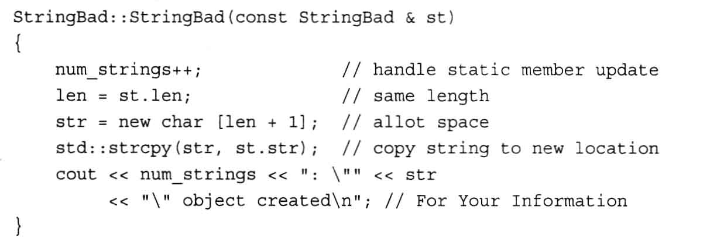

类和动态内存分配
复制构造函数
复制构造函数是要通过复制类来实现新建类。
默认的复制构造函数是浅复制，也就是只复制字面性变量，不复制指针类型，所以这里一定要注意一种错误，就是容易导致多个变量析构同一块内存导致报错误。

上图为深复制，也就是对于指针类型所指定的对象也能够实现复制
|
|
赋值构造函数
|
|
复制构造函数：返回一个对象，也就是一块内存
赋值构造函数：返回一个引用，并没有多出一块内存，只是将旧内存赋值给新内存而已
使用复制构造函数和赋值析构函数的时机
|
|
Star copy = sirius;这里是由于类没有被初始化，所以需要new出来一个对象，这个时候需要调用复制构造函数
assignment = sirius;这里是因为类已经被初始化，内存空间已经存在，只是将其他对象的值复制到当前对象中，所以这个时候调用的是赋值构造函数
注意
- 如果要把临时对象返回，要返回对象而不是引用或者指针。因为临时对象会被析构
- new和delete对应，new[] 和 delete[]，一定要注意，delete[] 是delete多对象，包含了char * temp = “abc”这种情况
派生类
派生类的调用
|
|
|
|
- 如果是对象的话，那么将根据对象的声明类型来调用函数
- 如果是引用或者指针的话，那么将根据对象的声明类型来调用函数
- 如果使用virtual的话，将根据指针或者引用所对应的实际类型来调用函数
继承中基类和派生类：
构造函数不能够为虚函数，而析构函数应是虚函数，除非类不能够做基类。基类要保证基类中的成员变量能够被正常析构，派生类也要保证派生类中的成员变量能够被正常析构
|
|
在派生类中定义类的话，要确定是使用父类还是子类的函数，通过作用域来进行获取。
最好要对类数据成员采用私有访问控制private，不要使用保护控制控制protected，同时通过基类方法使得派生类能够访问到基类。
|
|
友元函数并非是类的成员函数，不能够被继承
什么样的成员变量要被析构掉
|
|
成员变量label是指针，其对象是被new出来的，指针所指的对象是在堆中，需要被析构掉
成员变量message是数组，其对象不是被new出来的，对象所存在的内存空间是在栈中，不需要被析构，可以被C++自动析构掉。
派生类的使用
当初始化列表包含多个项目时，这些项目的初始化顺序时跟类的声明顺序保持一致，而不是在初始化列表中的顺序
|
|
使用using来重新定义访问权限
在访问基类的成员函数时，我们需要使用std::valarray<double>::min()来调用基类的成员函数的，但是如果我们使用了using来将基类的成员函数引入到派生类中，这样我们可以像使用派生类的成员函数一样使用基类的成员函数
|
|
使用using的方式将基类的成员函数引入到当前类中，这样就能够像使用当前类的成语函数一样去使用基类的成员函数
类的静态成员变量或者静态成语函数
|
|
- 不能通过类名来调用类的非静态成员函数
- 类的对象能够使用静态成员函数和非静态成员函数
- 静态成员函数不能够引用非静态成员函数
- 类的非静态成员函数可以调用静态成员函数
原因：
首先，类的静态函数是属于类的，类在没有初始化的时候就应该有的，所以类的静态函数不能够引用类的非静态成员函数，因为在类未初始化之前还没有非静态成员函数，如果调用非静态成员就会报错
类的非静态成员函数在调用时，这时类的静态成员函数早已经可用啦，所以能够调用
虚继承
|
|
报错误的原因：
如果一个类通过多种途径继承了一个非虚基类，则该类从每种途径分别继承非虚基类的一个实例，也就是说从Singer和Waiter两个基类中继承了两个Worker，多个基类实例都是问题
采用虚继承：
有间接虚基类的派生类包含直接调用间接基类构造函数的构造函数
通过优先规则来解决二义性